Inspiration pour les maquettes
Pour trouver de l'inspiration pour les maquettes, nous avons demandé à différentes ia de nous suggérer des maquettes, nous allons donc comparer, les différents résultats, établir leurs forces et faiblesses afin de créer une maquette finales. Le prompt que nous avons utilisé est le suivant:
Propose-moi un design pour une application web qui me permette de créer un glossaire métier. Je voudrais pouvoir ajouter un mot, sa définition, ainsi qu'un contexte lié à ce mot. Il faudrait aussi que je puisse entrer des synonymes et des antonymes, et que l'IA puisse en suggérer . Je voudrais avoir la possibilité de choisir les synonymes les plus pertinents. De plus, en fonction des mots déjà enregistrés, l’application devrait pouvoir proposer des contextes associés.
deepseek
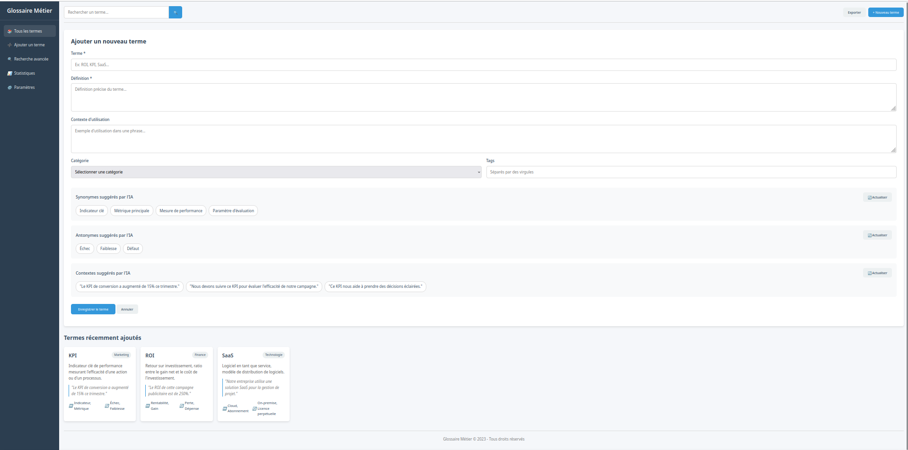 La maquette proposée par Deepseek est correcte mais trop chargée.
chatgpt
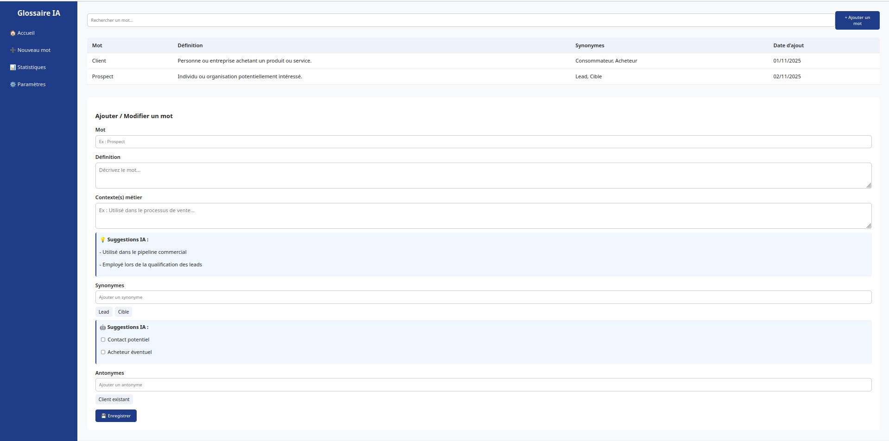 ChatGPT a proposé une maquette assez similaire à celle de Deepseek mais avec comme principale différence la présentation des différents termes qui se font sous forme d'un tableur, ce qui nous intéresse plus.
claude
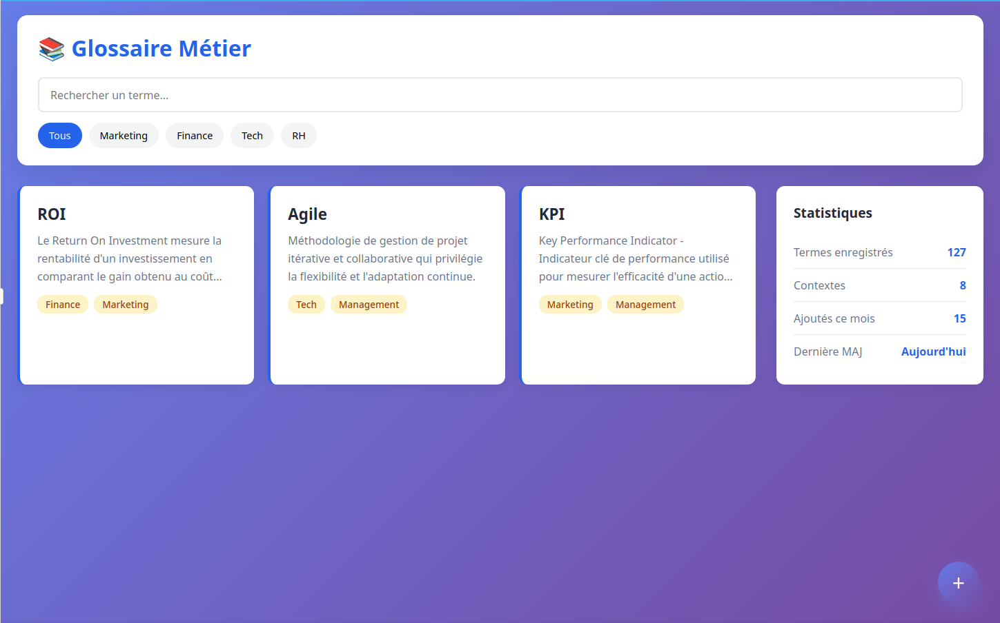 Claude a généré une maquette trop simpliste et vide avec des couleurs étranges.
gemini
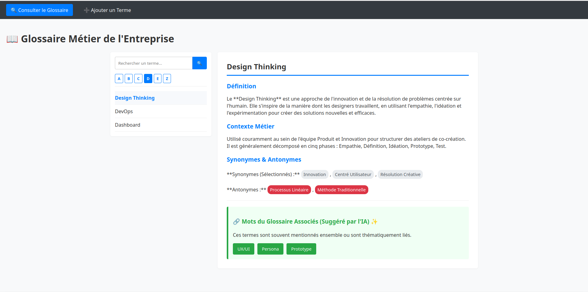 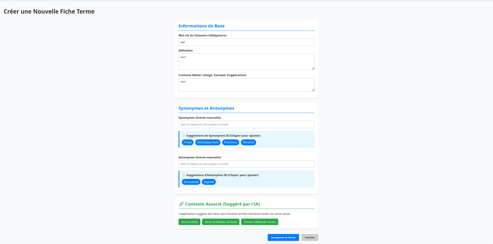 Gemini a proposé un desgin répondant certaines de nos exigeances, nous nous inspirons de plusieurs éléments de ce design.
grok
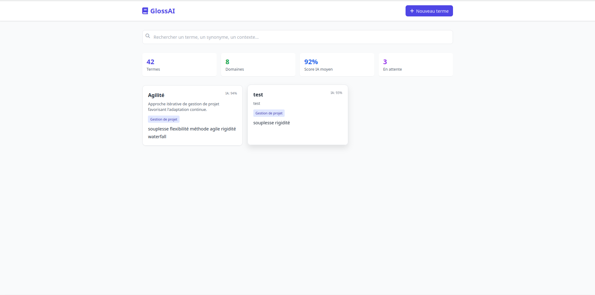 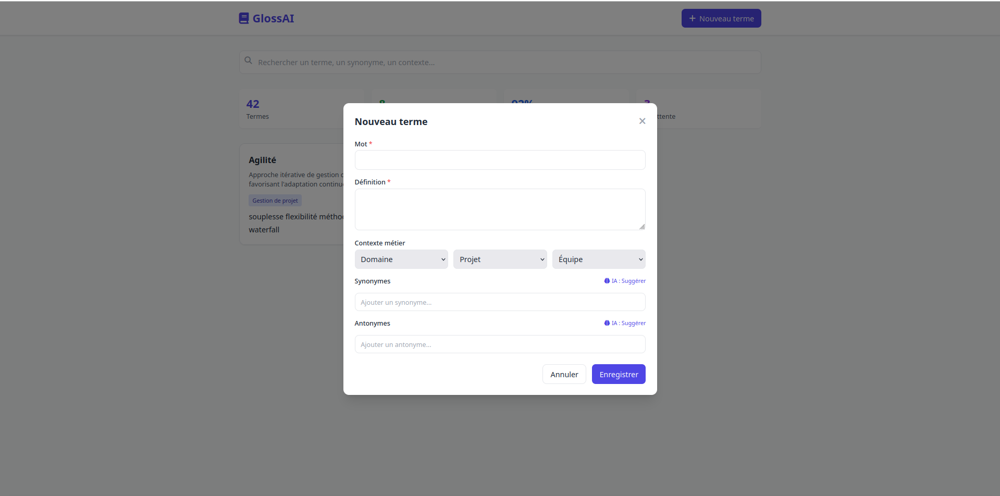 Le design de Grok répond quant à lui presque parfaitement à nos besoins à l'exception de la présentation des termes existants, il nous servira d'inspiration principale.
mistral
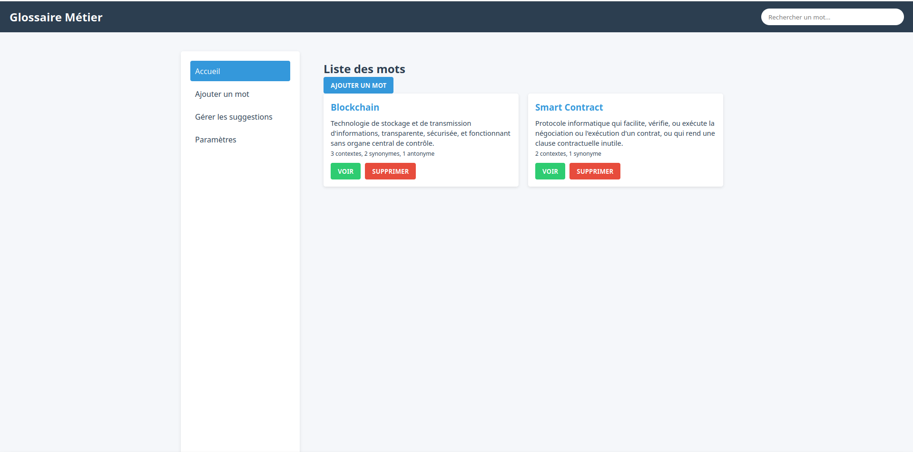 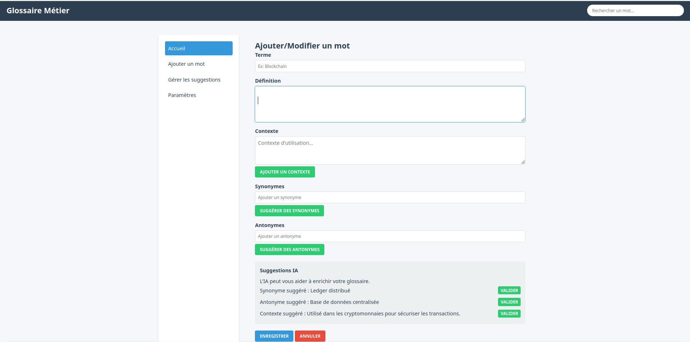 La présentation de mistral est plûtot archaïque.
qwen
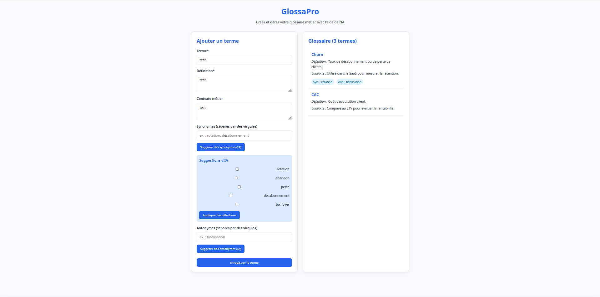 Qwen nous a proposé un design assez vide et simple, insuffisant pour en tirer de l'inspiration.
perplexity
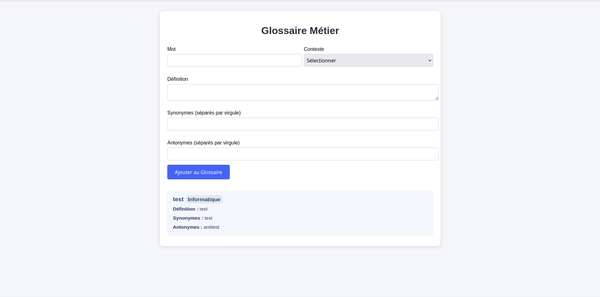 perplexity nous présente une interface avec les mêmes défaut que celle de qwen.
stitch
 .
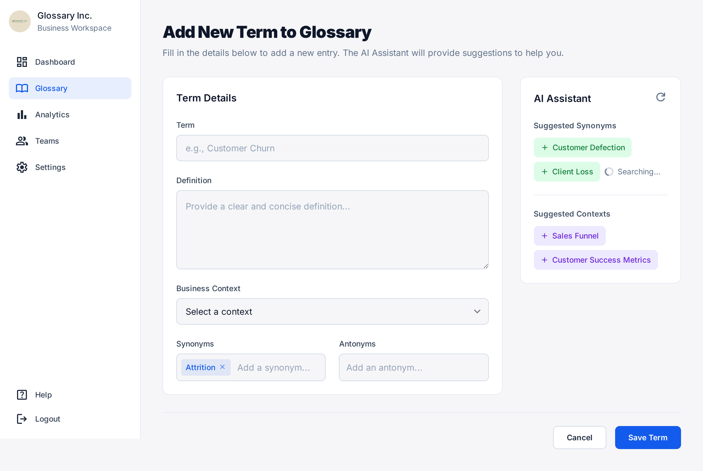
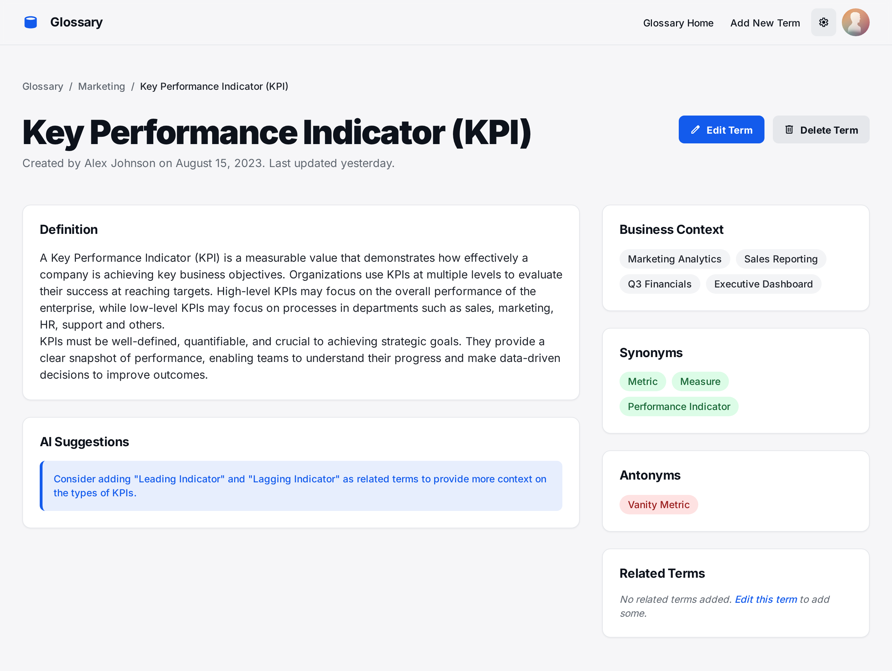
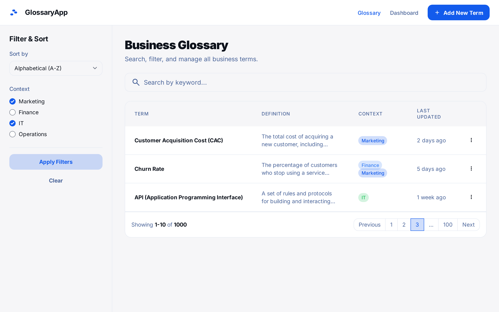
Stitch étant une intelligence artificielle spécialisée en design, elle nous propose plusieurs maquettes fournies assez semblables aux designs modernes mais est assez impersonnelles, cependant cela servira d'inspiration principale pour le tableur.
.
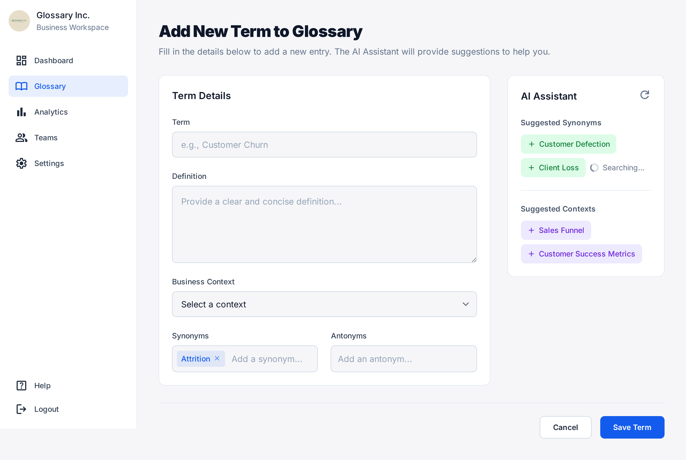
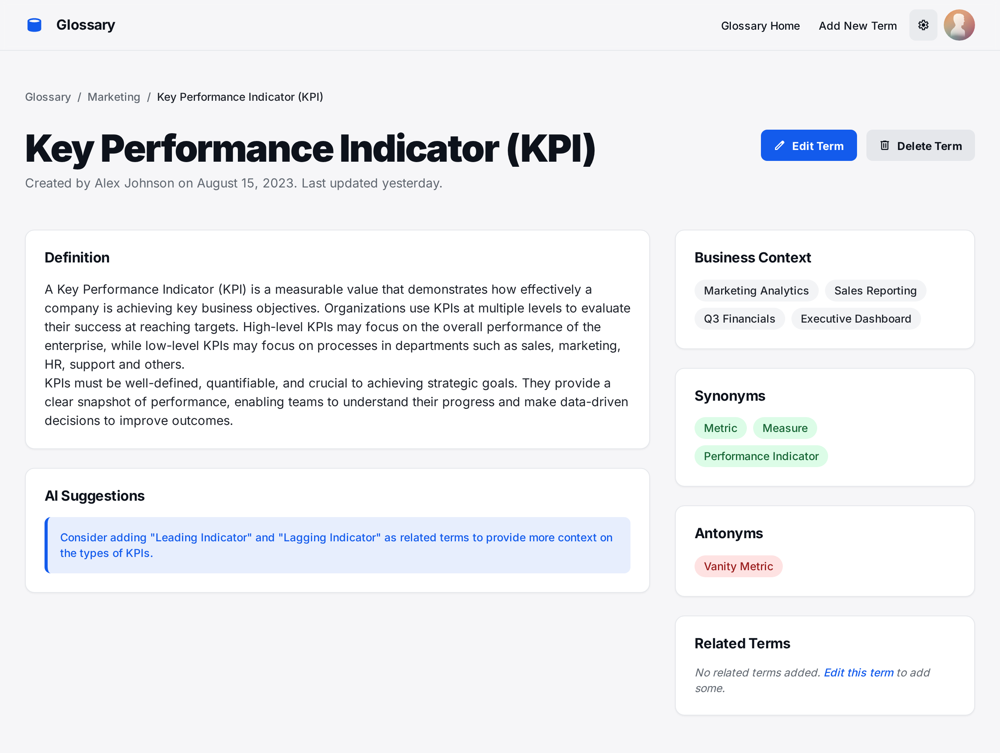
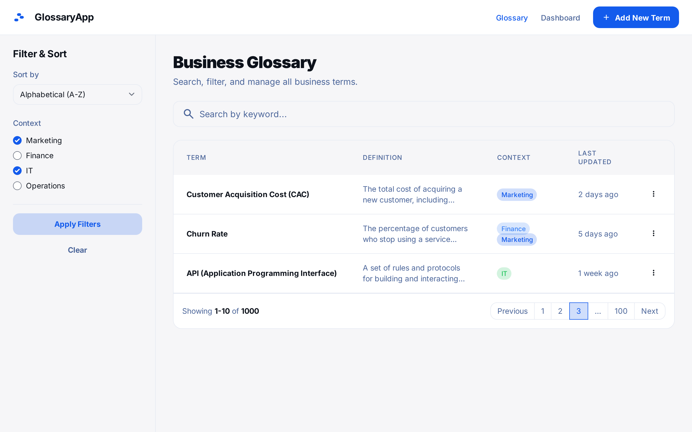
Stitch étant une intelligence artificielle spécialisée en design, elle nous propose plusieurs maquettes fournies assez semblables aux designs modernes mais est assez impersonnelles, cependant cela servira d'inspiration principale pour le tableur.